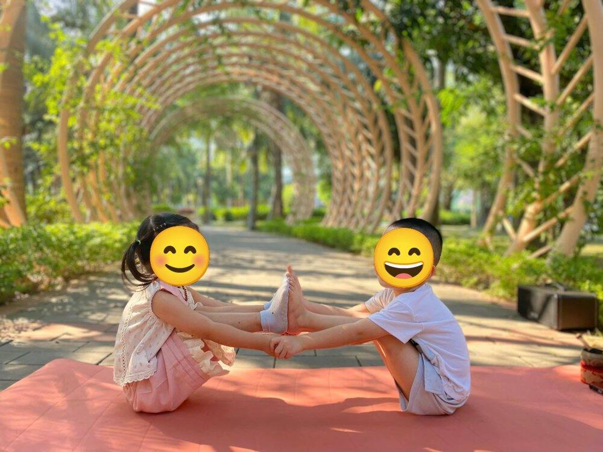

Yoga người lớn · Kiến thức tập luyện yoga
Hiểu đúng về 7 luân xa
“Luân xa tim của chị đang bị tắc. Đeo viên đá này vào là mở.”
Những câu như vậy không hiếm. Trên mạng, trong các hội nhóm, đôi khi ngay ở lớp học. Thường đi kèm một món đồ để bán.
Luân xa là một phần của triết lý yoga cổ. Khi được nói tới bằng giọng bí ẩn hoặc bằng nỗi sợ, nó dễ bị hiểu sai. Bài viết này tóm tắt luân xa theo truyền thống yoga, phân biệt điều gì là truyền thống, điều gì khoa học đã biết, và cách ứng dụng thực tế vào chăm sóc cơ thể, cân bằng cuộc sống và nuôi dạy trẻ.

- Luân xa là gì
- Hiểu đúng, không mụ mị
- 7 luân xa
- Vì sao bị lệch
- Cân bằng cơ thể, cuộc sống
- Nuôi con cân bằng
Luân xa là gì?
Chakra là tiếng Phạn. Nghĩa là “bánh xe”, hay “vòng tròn”. Có khi còn được gọi là “bánh xe của luân hồi”. Theo âm Hán Việt, chakra được gọi là luân xa.
Trong Ấn Độ giáo và một số nền văn hóa châu Á, mỗi luân xa được xem là một điểm hội tụ năng lượng tâm linh và tâm lý trong cơ thể. Có truyền thống nói 5 luân xa, có nơi 7, có nơi 8. Phổ biến nhất là 7, xếp thành một cột thẳng từ gốc cột sống lên tới đỉnh đầu.
Bấm vào từng điểm để đọc về luân xa đó.
Theo truyền thống yoga, các luân xa là nơi gặp nhau của các ống dẫn khí (kinh lạc), và chúng nằm trên thể khí. Dòng sinh lực prana, còn gọi là shakti hay khí, được cho là chảy dọc theo các kênh năng lượng gọi là nadis. Mỗi luân xa gắn với một vài chức năng sinh lý, một khía cạnh của nhận thức, một nguyên tố cổ điển (đất, nước, lửa, khí...), một màu sắc. Và được vẽ bằng một bông hoa sen với số cánh riêng.
Luân xa ở dưới cùng, Muladhara, gần với vật chất, với cái thô. Luân xa trên đỉnh đầu, Sahasrara, gắn với nhận thức thuần túy. Đi từ dưới lên là đi từ thô tới tinh.
Luân xa nằm ở thể khí, một trong năm thể của con người. Đọc thêm: Năm thể của con người.
Nguồn gốc: luân xa được nhắc tới sớm nhất trong các kinh Upanishad, đặc biệt là Brahma Upanishad và Yogatattva Upanishad. Mô hình này về sau xuất hiện trong Phật giáo Tây Tạng (Vajrayana) và trong lý thuyết Tantra Shakta. Hệ thống 7 luân xa mà người phương Tây biết đến chủ yếu nhờ bản dịch hai cuốn sách Ấn Độ, Sat-Cakra-Nirupana và Padaka-Pancaka, của Sir John Woodroffe (bút danh Arthur Avalon), trong cuốn “Sức mạnh của rắn” (The Serpent Power).
Hiểu đúng, để không bị mụ mị
Luân xa không phải một cơ quan mà bác sĩ mổ ra là thấy. Khoa học hiện nay chưa đo được nó. Nhưng vị trí các luân xa lại nằm rất gần những đám rối thần kinh lớn và những tuyến nội tiết quan trọng: tuyến thượng thận, tuyến tụy, tuyến ức, tuyến giáp, tuyến tùng, tuyến yên. Có thể hiểu hệ thống luân xa là tấm bản đồ người xưa vẽ ra sau thời gian dài thiền định, quan sát cơ thể.
Với cô, luân xa giống một tấm bản đồ, một tấm gương để tự hỏi: “Mình đang thiếu ở đâu? Thừa ở đâu?”. Không phải để sợ. Cũng không phải để chờ ai đó “mở” giùm.
Vài điều Sophia hay để ý, để không bị dẫn đi xa:
- Ai đó nói “luân xa của bạn bị tắc” rồi bán đá, bán vòng, bán buổi “khai mở” giá cao.
- Hứa chữa khỏi bệnh bằng luân xa, khuyên bỏ thuốc, bỏ bác sĩ.
- Khóa học “mở luân xa”, “đánh thức kundalini” trong vài ngày.
- Dùng luân xa để phán xét người khác: “người này luân xa thấp”, “người kia năng lượng xấu”.
Luân xa cân bằng lên bằng những việc rất bình thường. Ngủ đủ. Thở chậm. Tập đều. Nói thật. Thương người. Không cần phép màu.
Yoga đi cùng y học, không đi thay. Đang có bệnh thì vẫn đi khám, vẫn uống thuốc theo bác sĩ. Tập yoga, hiểu luân xa, là để sống với cơ thể ấy dịu dàng hơn.
7 luân xa, từng cái một
Mỗi luân xa dưới đây có phần ý nghĩa truyền thống, và phần gợi ý ứng dụng vào đời sống. Phần ứng dụng là cách hiểu để tự quan sát, không phải chẩn đoán.
| Luân xa | Màu | Hoa sen | Nguyên tố |
|---|---|---|---|
| Muladhara | đỏ | 4 cánh | Đất |
| Swadhisthana | cam | 6 cánh | Nước |
| Manipura | vàng | 10 cánh | Lửa |
| Anahata | xanh lá cây | 12 cánh | Khí (không khí) |
| Vishuddha | xanh da trời | 16 cánh | Âm thanh |
| Ajna | chàm (xanh đậm) | 2 cánh | Thời gian, ánh sáng |
| Sahasrara | tím, trắng bạc | 1000 cánh | Không gian, ý nghĩ |
1. Muladhara
Luân xa gốc
- 📍 đáy cột sống, vùng đáy chậu
- 🎨 đỏ
- 🪷 sen 4 cánh
- 🌍 Đất
Ý nghĩa truyền thống: Bản năng, sự an toàn, sự sống còn, các tiềm năng cơ sở của con người. Kích thích sự hăng hái, kiên quyết; lan tỏa sức nóng của sự sống, giúp tuần hoàn máu, chống lại cái lạnh. Sự tồn tại trên mặt đất, sự kiên quyết, khứu giác.
Luân xa này thường được liên hệ với tuyến thượng thận phần bên trong (adrenal medulla), nơi chịu trách nhiệm chống trả khi sự sinh tồn bị đe dọa. Đây cũng được xem là nơi kundalini nằm cuộn lại.
Đứng vững. Ngủ được. Thấy mình có chỗ dựa.
Hay lo chuyện tiền, chuyện nhà, giật mình vì việc nhỏ. Hoặc ngược lại: bám chặt lấy thứ mình có, sợ thay đổi.
Người lớn có thể thử: Đứng chân trần trên cỏ vài phút. Tư thế núi, chiến binh, cây. Ăn bữa ấm, ngủ đúng giờ. Những việc rất “đất” như dọn nhà, nấu cơm cũng là cách về lại gốc.
2. Swadhisthana
Luân xa xương cùng
- 📍 vùng bụng dưới, xương cùng, vùng háng
- 🎨 cam
- 🪷 sen 6 cánh
- 🌍 Nước
Ý nghĩa truyền thống: Tình cảm cơ bản, sự sáng tạo. Sự tự tin can đảm, tuần hoàn máu chống lại cái lạnh, ước mơ, niềm vui, sự kiên định, quả quyết, tình trạng khỏe mạnh, vị giác, sinh lý nữ.
Luân xa này được cho là tương ứng với tinh hoàn hay buồng trứng, nơi sản xuất nhiều loại hormone sinh dục; chu kỳ sinh sản có thể tạo ra những đảo lộn tâm trạng đáng kể.
Cảm xúc chảy được. Vui được, buồn được, rồi qua.
Cảm xúc bị nén lại, cứng nhắc, chẳng thấy gì vui. Hoặc cảm xúc tràn bờ, dễ chạy theo thú vui nhất thời.
Người lớn có thể thử: Các thế mở hông: góc cố định, bồ câu, xoay hông tròn. Đi bơi, nhảy theo nhạc, vẽ bậy một tờ giấy. Cho phép mình khóc khi cần.
3. Manipura
Luân xa búi mặt trời (đám rối dương)
- 📍 vùng bụng trên, quanh rốn và thượng vị
- 🎨 vàng
- 🪷 sen 10 cánh
- 🌍 Lửa
Ý nghĩa truyền thống: Sự chuyển đổi từ cái nền lên các tình cảm cao hơn, năng lượng, tiêu hóa và đồng hóa. Sáng tạo nghệ thuật, vui sướng lạc quan, đối trọng với bi quan chán nản. Sức mạnh, sự điều khiển, tự chủ, sự nghiệp. Ý chí, quyết định, vui mừng, giận dỗi, sự quả quyết, năng lực cá nhân, tầm nhìn.
Luân xa này được liên hệ với tuyến tụy (pancreas) và phần vỏ ngoài của tuyến thượng thận, những tuyến đóng vai trò quan trọng trong tiêu hóa, chuyển thức ăn thành năng lượng cho cơ thể.
Dám quyết. Làm đến cùng. Biết nói “không”.
Thiếu: chần chừ, đợi người khác quyết thay, hay chán nản. Thừa: nóng nảy, muốn kiểm soát mọi thứ, giận dỗi.
Người lớn có thể thử: Thế thuyền, chiến binh, chào mặt trời. Thở bụng chậm khi thấy mình nóng lên. Làm xong một việc nhỏ mỗi ngày, rồi gạch nó đi.
4. Anahata
Luân xa tim
- 📍 giữa ngực
- 🎨 xanh lá cây
- 🪷 sen 12 cánh
- 🌍 Khí (không khí)
Ý nghĩa truyền thống: Những tình cảm cao hơn, lòng từ bi, tình yêu, sự cân bằng và trạng thái hạnh phúc. Sống tích cực với thiên nhiên, tận tụy, lòng thương người, hàn gắn, thông thái, kiên định, kiên nhẫn, tinh tấn.
Luân xa này được liên hệ với tuyến ức (thymus) trong ngực, một phần của hệ miễn dịch và hệ nội tiết, sản xuất tế bào T; tuyến này bị ảnh hưởng xấu bởi tâm trạng căng thẳng.
Thương người mà không quên thương mình.
Khép lòng, khó tin ai, giữ khoảng cách. Hoặc cho đi đến kiệt sức, quên mất bản thân.
Người lớn có thể thử: Các thế mở ngực: rắn hổ mang, cây cầu, con cá. Đặt tay lên ngực, thở năm hơi. Gọi một cuộc điện thoại cho người mình thương. Ra công viên nhìn cây.
5. Vishuddha
Luân xa cổ họng
- 📍 cổ họng
- 🎨 xanh da trời
- 🪷 sen 16 cánh
- 🌍 Âm thanh
Ý nghĩa truyền thống: Sự truyền đạt thông tin, sự phát triển và việc diễn đạt ý tưởng. Lời nói, tự thể hiện bản thân, sáng tạo, giao thiệp, diễn cảm, hài hước, hùng biện, trực giác, sự tổng hợp, thính giác.
Luân xa này được cho là song song với tuyến giáp (thyroid), tuyến nằm trong cuống họng, sản xuất hormone điều khiển sự lớn lên và trưởng thành của cơ thể.
Nói thật, nói nhẹ. Và biết lắng nghe.
Nuốt lời vào trong, ngại nói, nói xong thì hối hận vì không nói thật. Hoặc nói quá nhiều, không nghe ai.
Người lớn có thể thử: Thở ong vo ve (Bhramari), tụng âm Om, hát một bài mình thích. Thế sư tử thè lưỡi. Viết ra điều mình chưa dám nói.
6. Ajna
Luân xa con mắt thứ ba
- 📍 giữa hai đầu chân mày
- 🎨 chàm (xanh đậm)
- 🪷 sen 2 cánh
- 🌍 Thời gian, ánh sáng
Ý nghĩa truyền thống: Thời gian và nhận thức về ánh sáng. Trực giác, điều khiển tri giác, sự tập trung, trí tưởng tượng, làm chủ các giác quan, sự dịu đi và an toàn.
Ajna được nối với tuyến tùng (pineal gland), tuyến rất nhạy với ánh sáng, sản sinh melatonin, điều khiển bản năng ngủ và thức. Hiện vẫn có tranh cãi về thứ tự tuyến yên và tuyến tùng giữa luân xa này và luân xa vương miện.
Nhìn rõ. Tập trung được. Ngủ ngon.
Đầu óc lộn xộn, mất tập trung, khó ngủ vì nghĩ quá nhiều. Hoặc sống trong tưởng tượng, xa rời thực tế.
Người lớn có thể thử: Thở luân phiên mũi, nhìn ngọn nến (trataka) vài phút, thế em bé tì trán xuống thảm. Tắt màn hình một tiếng trước khi ngủ. Ra nắng buổi sáng.
7. Sahasrara
Luân xa vương miện
- 📍 đỉnh đầu
- 🎨 tím, trắng bạc
- 🪷 sen 1000 cánh
- 🌍 Không gian, ý nghĩ
Ý nghĩa truyền thống: Luân xa của nhận thức, chủ lực điều khiển các luân xa khác. Ý thức tâm linh, đoàn kết, hạnh phúc, giác quan của sự thấu cảm; đối trọng với nỗi sợ hãi, lo âu vô cớ, bồn chồn không yên.
Vai trò của luân xa này được ví giống tuyến yên (pituitary gland), tiết ra hormone điều khiển phần còn lại của hệ thống tuyến nội tiết và nối với hệ thần kinh trung ương.
Thấy mình là một phần của cái gì đó lớn hơn. Bình an.
Thấy đời vô nghĩa, lạc lõng. Hoặc mải mê “tâm linh” đến mức bỏ quên việc nhà, việc đời.
Người lớn có thể thử: Ngồi thiền năm phút. Savasana trọn vẹn cuối buổi tập. Viết ba điều biết ơn trước khi ngủ. Làm một việc tốt không ai biết.
Vì sao luân xa bị lệch?
Truyền thống yoga không nói về “tắc” theo kiểu bí hiểm. Những gì làm con người mất cân bằng được kể ra rất đời thường: thói quen xấu, sáu kẻ thù, tám sự ràng buộc. Đều là những điều rất thường gặp trong đời sống hằng ngày.
Các thói quen xấu
- Ngủ nhiều
- Lừ đừ, uể oải
- Sợ sệt
- Giận dữ
- Lười biếng
- Trì hoãn
- Hợm hĩnh
- Ba hoa
- Khoe khoang
6 kẻ thù
- Dục vọng thể xác
- Giận dữ
- Tham lam
- Quyến luyến mù quáng
- Kiêu căng
- Ganh tỵ
8 sự ràng buộc
- Thù ghét
- E lệ, mắc cỡ
- Sợ sệt
- Nghi ngờ
- Giả vờ
- Kiêu căng về dòng dõi
- Tự cao về văn hóa
- Tính vị kỷ
Trì hoãn mãi, Manipura yếu đi. Giận mà nuốt vào, cổ họng nghẹn lại. Sợ sệt kéo dài, cái gốc lung lay. Không cần ai “đo năng lượng”. Chỉ cần thành thật nhìn lại một ngày đã sống.
Prana và kundalini
Prana là tiếng Phạn. “Pra” là ở bên ngoài, “An” là thở, chuyển động, sống. Prana là hơi thở, là sinh khí, toàn bộ các dòng năng lượng sống, được chia thành 7 tia. Prana được cho là dồi dào khi ánh sáng mặt trời dồi dào, và yếu đi khi vắng ánh sáng. Qua vùng thượng vị, nơi luân xa 3 nằm, dòng sinh khí đổ năng lượng vào cơ thể, giúp các dây thần kinh hoạt động điều hòa.
Kundalini, theo truyền thống yoga, là tinh khí của vũ trụ tiềm ẩn trong mỗi người, nằm cuộn ở luân xa gốc. Khi được đánh thức, nó bị hút mãnh liệt về phía cốt lõi của linh hồn.
Lưu ý: kundalini không phải thứ để tò mò thử một mình, càng không phải để ép. Những kỹ thuật thở mạnh, khóa năng lượng cần người thầy có kinh nghiệm đi cùng, từng bước, trong nhiều năm. Ở lớp trẻ em, cô không dạy những kỹ thuật này. Các con chỉ cần thở chậm, chơi và cười.
Đem luân xa vào cân bằng cơ thể và cuộc sống
Ứng dụng luân xa không cần nghi lễ “thanh tẩy” nào. Nó có thể là một cái khung nhỏ để soi lại bản thân mỗi ngày.
Ví dụ. Một tuần thấy lưng dưới mỏi, ngủ chập chờn, hay lo vặt. Nhìn lên tấm bản đồ, đó là vùng gốc. Vậy thì tuần đó tập nhiều thế đứng hơn, sáng ra công viên đi chân trần một lúc, ăn cơm nhà, đi ngủ sớm. Không có gì bí ẩn. Nhưng nó giúp biết nên bắt đầu từ đâu.
Hay có hôm cổ họng nghèn nghẹn, vì một câu muốn nói mà chưa nói. Thở ong vo ve vài vòng. Rồi nhắn cái tin ấy đi. Nhẹ hẳn.
Một buổi tập yoga trọn vẹn thật ra đã chạm đủ bảy luân xa: thế đứng cho gốc, mở hông, thế thuyền, mở ngực, thở có âm thanh, thăng bằng tập trung, và nằm thư giãn cuối buổi. Có lẽ vì vậy mà Sophia luôn giữ lại vài phút Savasana cuối buổi.
Bảy câu hỏi có thể tự hỏi trước khi ngủ, đi từ dưới lên:
- Hôm nay mình có thấy an toàn, đủ đầy không? Hay đang lo một điều gì?
- Mình đã cho phép mình vui, buồn, chơi một chút chưa?
- Có việc gì mình đã quyết và làm xong không?
- Mình đã thương ai hôm nay? Có thương chính mình không?
- Có điều gì mình muốn nói mà chưa nói, hay đã nói mà chưa thật lòng?
- Đầu óc mình đang rõ ràng hay rối? Tối nay mình ngủ được không?
- Có lúc nào trong ngày mình thấy bình an, dù chỉ một phút?
Câu nào làm mình khựng lại, đó là chỗ cần chăm. Ngày mai chỉ cần làm một việc nhỏ cho chỗ ấy.

Nuôi dạy con để các luân xa cân bằng
Có cần dạy trẻ tên các luân xa không?
Không cần.
Trẻ nhỏ không cần biết chữ Muladhara. Con cần được an toàn, được vui, được tự làm, được thương, được nói, được ngủ ngon, được bình an. Bảy điều ấy nằm gọn trong bảy luân xa. Bố mẹ hiểu tấm bản đồ, rồi lặng lẽ chăm từng tầng cho con. Vậy là đủ.
Một nguyên tắc dễ nhớ: luân xa được nuôi từ dưới lên. Con chưa thấy an toàn thì chưa thể tự tin. Chưa được thương thì khó mà biết nói thật. Vì vậy khi trẻ gặp khó khăn ở “tầng trên”, nên nhìn xuống “tầng dưới” trước.
1. Luân xa gốc
Con cần thấy mình an toàn trước đã. Giờ giấc đều đặn. Một cái ôm khi con sợ. Thay vì “có thế mà cũng sợ”, chỉ cần ngồi xuống cạnh con. Cho con đi chân đất, nghịch đất cát, làm cây, làm núi, làm voi dậm chân.
2. Luân xa xương cùng
Cho con chơi nước, nặn đất, vẽ, nhảy múa. Gọi tên cảm xúc cùng con: “Con đang giận à?”. Không bắt con nín ngay. Ở lớp của Sophia, yoga dance, yoga múa là những bài các con mê nhất.
3. Luân xa búi mặt trời
Cho con tự làm: tự đi giày, tự dọn thảm, tự chọn áo. Khen nỗ lực, không khen “con giỏi quá”. Thổi nến, thở bễ nhẹ kiểu “đoàn tàu xình xịch”, tư thế chiến binh dũng cảm.
4. Luân xa tim
Con học yêu thương bằng cách được yêu thương. Yoga đôi với bố mẹ, massage cuối buổi, ôm gấu bông thở. Nhờ con chăm một chậu cây, cho con mèo ăn. Dạy con nói “cảm ơn”, “xin lỗi” bằng chính việc mình nói với con.
5. Luân xa cổ họng
Hỏi ý con và nghe đến hết câu. Hát cùng con, đọc truyện, cho con kể lại theo cách của con. Thở ong vo ve, gầm như sư tử, kêu như con vật trong bài yoga chủ đề. Con nói sai, không cười chê.
6. Luân xa con mắt thứ ba
Cho con chơi trò thăng bằng: cây, đại bàng, con cò. Kể chuyện để con tưởng tượng. Thở cùng gấu bông. Bớt màn hình buổi tối, giữ giờ ngủ đều. Trán chạm thảm trong thế em bé, các con thích lắm.
7. Luân xa vương miện
Thư giãn nằm cuối buổi, chỉ nghe tiếng chuông. Trước giờ ngủ hỏi con: “Hôm nay con vui vì điều gì?”. Cùng con nhìn trời, nhìn sao. Không cần nói chữ “tâm linh”, các con tự cảm được bình an.

Trò “cầu vồng trong người” Sophia hay chơi cùng các con từ 5 tuổi: cả lớp ngồi xếp bằng, người hướng dẫn đặt tay lên từng chỗ trên người, từ mông lên tới đỉnh đầu, và gọi một màu. “Đỏ nè, ngồi thật vững như cây. Cam nè, bụng tròn như quả cam. Vàng, mặt trời trong bụng...” Đến tím trên đỉnh đầu thì cả lớp thở ra thật dài. Các con không học thuộc gì cả. Các con chỉ thấy cơ thể mình có màu, và thấy thích.
Một số bài trên Sophia Yoga có thể dùng ngay: Yoga dance cho luân xa 2, Yoga đôi và massage cuối buổi cho luân xa tim, thở ong vo ve cho cổ họng, 51 truyện yoga chủ đề cho trí tưởng tượng, thở cùng gấu bông cho giấc ngủ và sự bình an.
Tóm lại
Luân xa thường bị nghĩ là điều gì rất cao xa, phải thiền thật giỏi mới chạm tới.
Thực ra, ứng dụng của nó nằm ngay trong một bữa cơm ấm, một câu xin lỗi, một lần dám nói “không”, một buổi tối tắt điện thoại ôm con ngủ.
Bình thường thôi. Mà cân bằng.
Một món đồ đeo có thể mang lại niềm vui, nhưng không thay được những thói quen ấy. Cô tin cân bằng đến từ những điều giản dị: ngồi xuống, thở chậm, sống tử tế với cơ thể mình và với người xung quanh.
🌈 Muốn dạy yoga cho các con một cách cân bằng, tử tế?
Khóa đào tạo HLV Yoga trẻ em của Sophia Yoga hướng dẫn cách xây một buổi học chạm đủ thân, khí, tâm cho các con: trò chơi, câu chuyện, hơi thở, thư giãn, và cách ứng xử khi con sợ, con giận, con ngại. Người lớn muốn tập riêng có lớp Zoom và lớp kèm 1 kèm 1.
Hình hoa sen và sơ đồ do Sophia Yoga vẽ minh họa, số cánh và màu theo truyền thống. Bài viết chia sẻ kiến thức và kinh nghiệm tập luyện, không thay cho lời khuyên của bác sĩ.